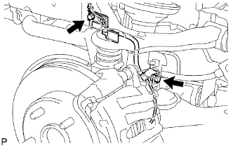
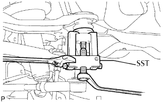
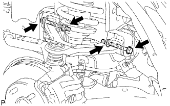

ĐÒN TREO TRÊN PHÍA TRƯỚC > THÁO |
| 1. THÁO BÁNH TRƯỚC |
| 2. KIỂM TRA ĐÒN TREO PHÍA TRÊN PHÍA TRƯỚC |
Kiểm tra rằng không có độ rơ ở khớp cầu bằng cách lắc đòn treo trên lên và xuống bằng tay.
| 3. THÁO DÂY CẢM BIẾN ĐIỀU KHIỂN TRƯỢT |
|  |
Tháo 2 bulông và ngắt dây điện cảm biến điều khiển trượt.
| 4. LẮP CỤM ĐÒN TREO TRÊN TRƯỚC TRÁI |
|  |
Đỡ đòn treo dưới bằng kích.
Tháo kẹp và đai ốc.
Dùng SST, tháo khớp cầu phía trên ra khỏi cam lái.
|  |
Tháo 2 đai ốc và 2 bu lông.
Tháo đòn treo phía trên.